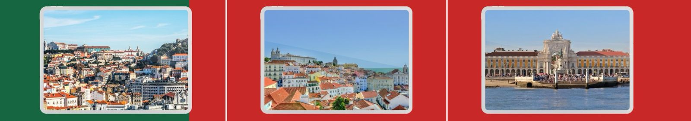
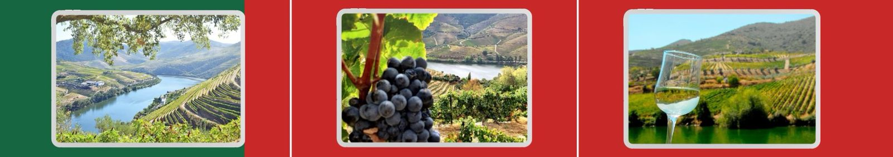
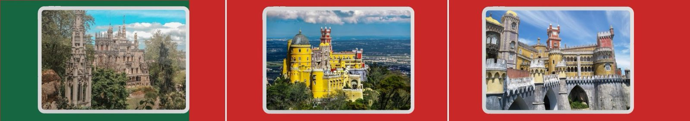
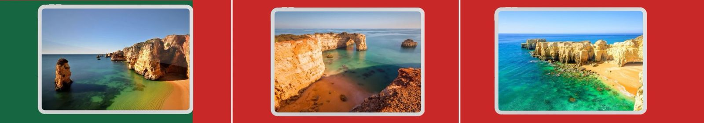
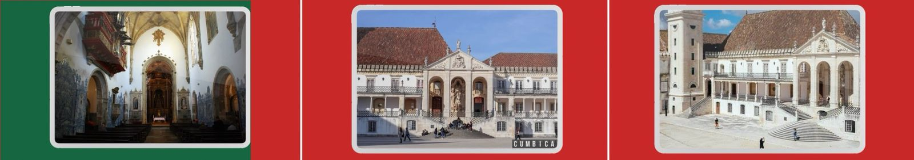
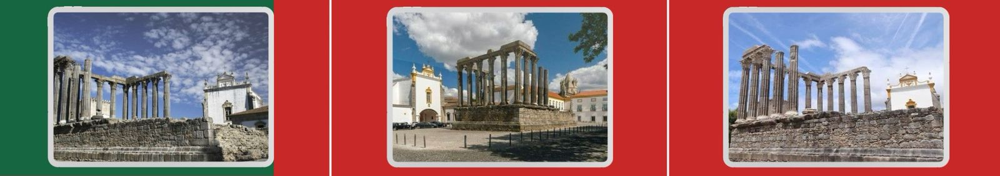
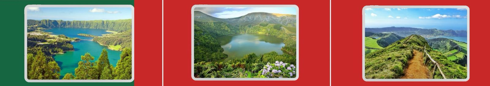

Descubra os Encantos de Portugal: Pontos Turísticos Imperdíveis.
Portugal é um país onde a tradição e a modernidade se encontram em perfeita harmonia. Com paisagens de tirar o fôlego, uma rica herança cultural e uma gastronomia mundialmente aclamada, cada canto do território português guarda experiências únicas para os visitantes. Se você está planejando uma viagem ou apenas sonhando com o próximo destino, conheça alguns dos principais pontos turísticos de Portugal:
1. Lisboa: A Capital dos Sete Colinas
Lisboa encanta com seu charme histórico, ruas de paralelepípedos e bondinhos amarelos. Entre os destaques estão a Torre de Belém, o Mosteiro dos Jerónimos e o tradicional bairro de Alfama, onde o fado ecoa pelas vielas.
2. Porto: Vinhos e Romance às Margens do Douro
Conhecida pelo famoso vinho do Porto, a cidade é um convite à contemplação. A Ribeira, com suas casas coloridas e restaurantes típicos, o majestoso Palácio da Bolsa e a Ponte Dom Luís I são paradas obrigatórias.
3. Sintra: Palácios de Conto de Fadas
Sintra parece saída de um livro de fantasia. O Palácio da Pena, com suas cores vibrantes, e a misteriosa Quinta da Regaleira, com túneis e jardins simbólicos, fazem deste um dos destinos mais mágicos de Portugal.
4. Algarve: Praias de Encantar
Ao sul do país, o Algarve atrai com suas praias de areia dourada e falésias dramáticas. Cidades como Lagos, Albufeira e Tavira oferecem sol, mar e diversão o ano inteiro.
5. Coimbra: Tradição Acadêmica
Lar da mais antiga universidade de Portugal, Coimbra respira conhecimento e história. A Biblioteca Joanina é um verdadeiro tesouro arquitetônico, e o centro histórico guarda memórias medievais em cada esquina.
6. Évora: Tesouro Alentejano
Patrimônio Mundial da UNESCO, Évora impressiona com seu Templo Romano, a Capela dos Ossos e suas ruas calmas, cercadas por muralhas centenárias.
7. Ilhas dos Açores e Madeira: Natureza em Estado Puro
Se você busca natureza exuberante, não pode deixar de conhecer os arquipélagos dos Açores e da Madeira. Com paisagens vulcânicas, lagoas cristalinas, trilhas e miradouros espetaculares, são destinos perfeitos para quem ama aventura e tranquilidade.
